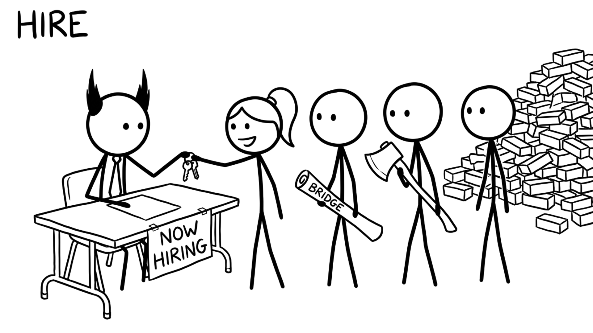

<section id="cap-hire" data-transition="fade" style="display:flex; align-items:center; justify-content:center; padding:0; background:#fcfcfa">

<p style="position:absolute;left:0;bottom:10px;width:1920px;margin:0;text-align:center;font-family:'Patrick Hand', 'Trebuchet MS', sans-serif;font-size:22px;color:#8a8f98">Copyright Dobromir Montauk 2026</p>
<aside><b>Hire.</b> Hiring is the second thing your CEO judges you on, after delivery, because it's where everything else becomes visible: candidates can smell your culture, your strategy and whether you grow people.<br>- Hire for the gap, not the clone: the team that's all backend needs the person who has shipped mobile.<br>- One great senior hire can be worth three average ones; a bad hire is net negative and costs months to undo.<br>- Make your recruiter a real partner: if they can't explain why the role is exciting, candidates won't feel it.<br>- Every interview loop costs the team 5–10 engineer-hours. Budget for it.<br>Hiring is slow capacity: it takes 3–6 months before a hire is fully ramped. Start before you're desperate.</aside>
</section>
